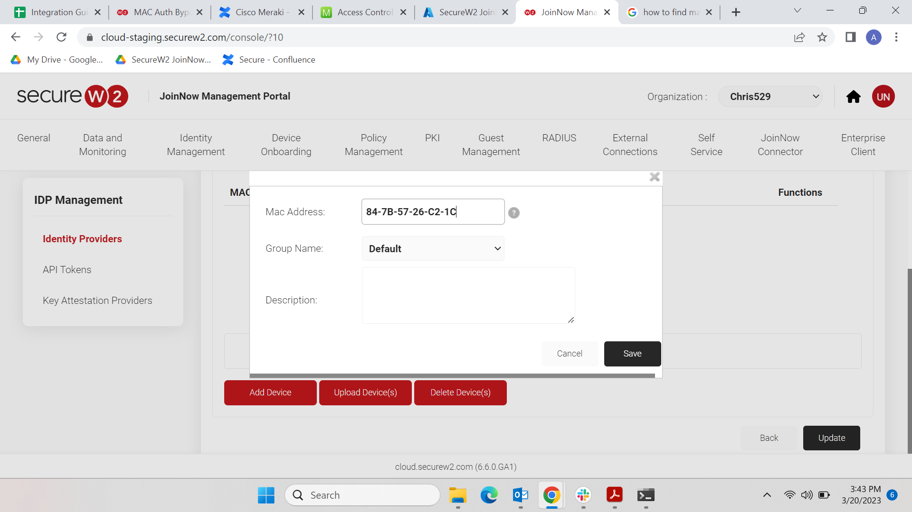
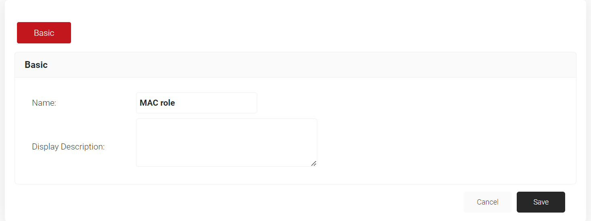
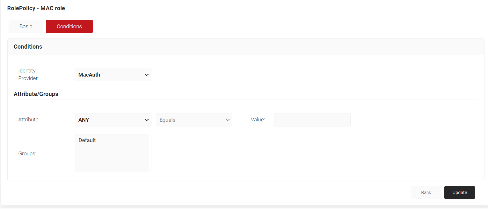
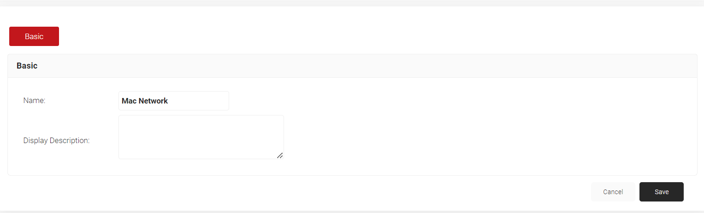
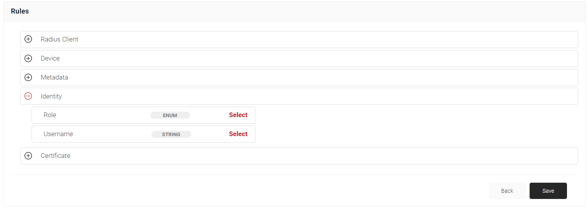
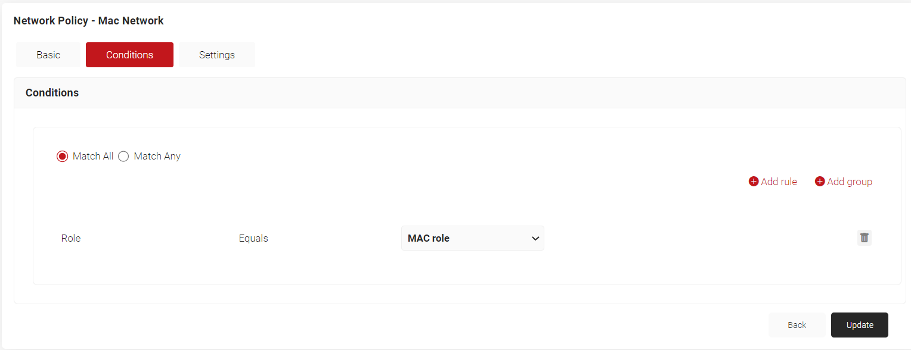
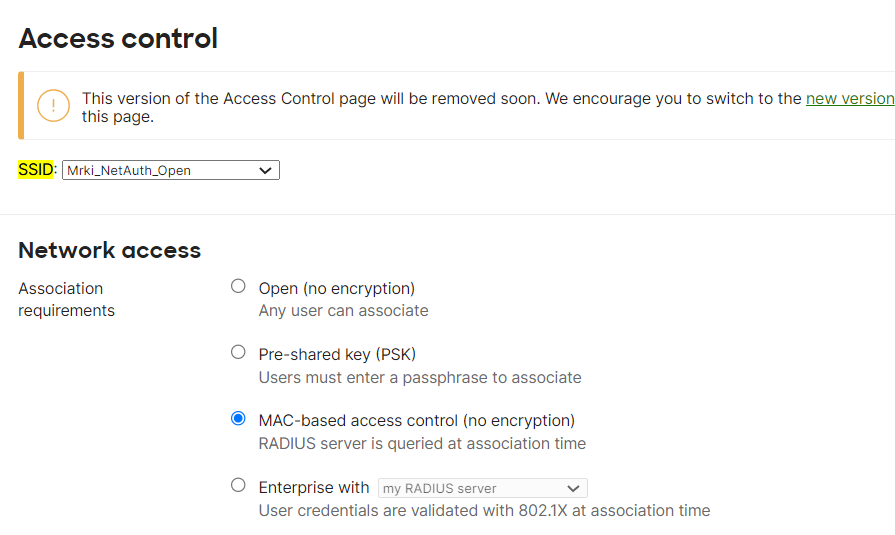
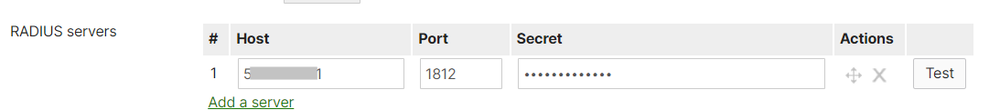

SecureW2 · Cisco Meraki
Cisco Meraki MAC Authentication
Configure MAC-based network access control using SecureW2's JoinNow Management Portal and Cisco Meraki. Follow the steps below to create an Identity Provider, set up Role and Network Policies, and configure your Meraki SSID.
SecureW2 JoinNow
Cisco Meraki
MAC Authentication
1 Create Identity Provider in SecureW2
JoinNow MultiOS Management Portal — Identity Management
Follow the below steps to create an Identity Provider in SecureW2 and configure it for MAC Authentication:
1
Log in to JoinNow MultiOS Management Portal.
2
Navigate to Identity Management > Identity Providers > Add Identity Provider.
3
Enter a name for your Identity provider in the NAME field.
4
In the Description field, enter a suitable description.
5
Under the Type drop-down, select MAC Authentication.
6
Click Save. The page refreshes.
7
Click on the Conditions Tab.
8
Click Add Device.
9
Enter the MAC Address of the device you need authenticated in the MAC Address field.
10
Click Save.

11
Click Update.
2 To set up Role Policy and Network Policy
JoinNow MultiOS Management Portal — Policy Management
1
Log in to the JoinNow MultiOS Management Portal.
2
Navigate to Policy Management > Role Policies.
3
Click Add Role.
4
In the Name field, enter a name for your role policy.
5
In the Display Description field, enter a suitable description.
6
Click Save.

7
The page refreshes and the Conditions tab appears. Click on the Conditions tab.
8
From the Identity Provider drop-down, select the Identity Provider you created with MAC Authentication type.
NoteDevices for MAC Authentication must be added in this Identity Provider.
9
Click Update.

10
Under Policy Management, click on Network Policies.
11
In the Name field, enter a name for your network policy.
12
In the Display Description field, enter a suitable description.
13
Click Save.

14
Click the Conditions tab.
15
Select Match All or Match Any based on your requirement to set an authentication criteria. In the case explained here, we are selecting Match All.
16
Click Add rule.
17
Click on Identity.
18
Click Select adjacent to Role option.
19
Click Save.

20
The option Role appears under the Conditions tab.
21
From the Role Equals drop-down, select the role policy you created in the previous step.
22
Click Update.

3 Configure Cisco Meraki
Meraki Dashboard — Wireless Access Control & RADIUS
Follow the below steps to set up MAC based Authentication using Meraki:
1
Log into the Cisco Meraki Portal.
2
Navigate to Wireless > Access Control.
3
Select your SSID from the SSID drop-down.
4
Under Network Access control, select MAC-based access control.

5
Under the Splash page, select None.
6
For the Radius servers section, click Add a server.
7
Copy and paste the Host IP, Port, and Secret from Radius Configuration (SecureW2 Management Portal > Radius > Radius Configuration) in the Host, Port and Secret fields in Meraki as shown below:

8
Scroll down to the bottom of the page and click Save changes.